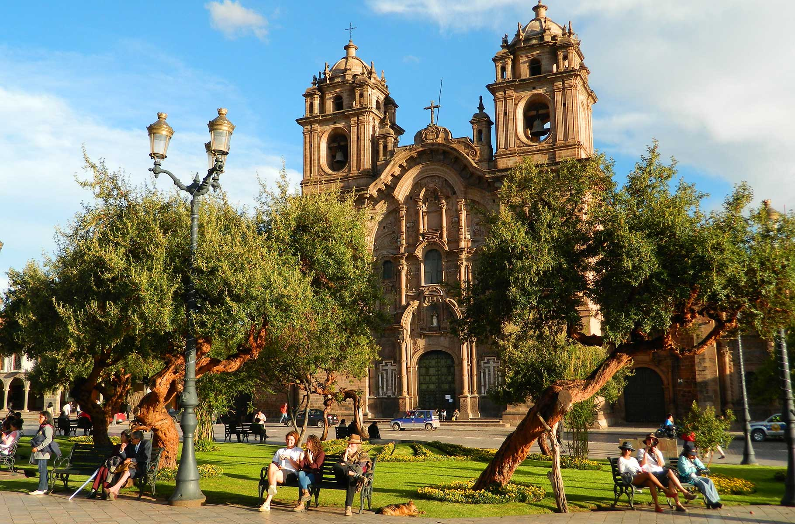
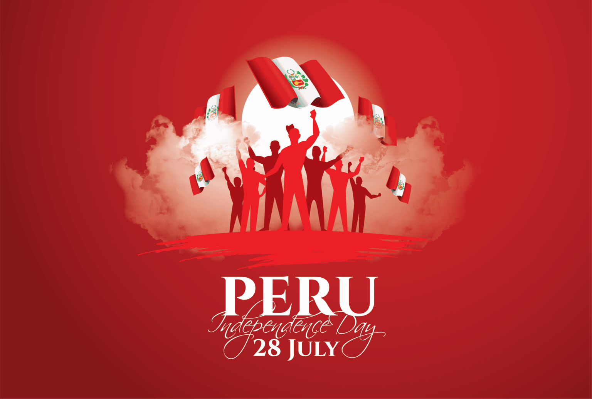
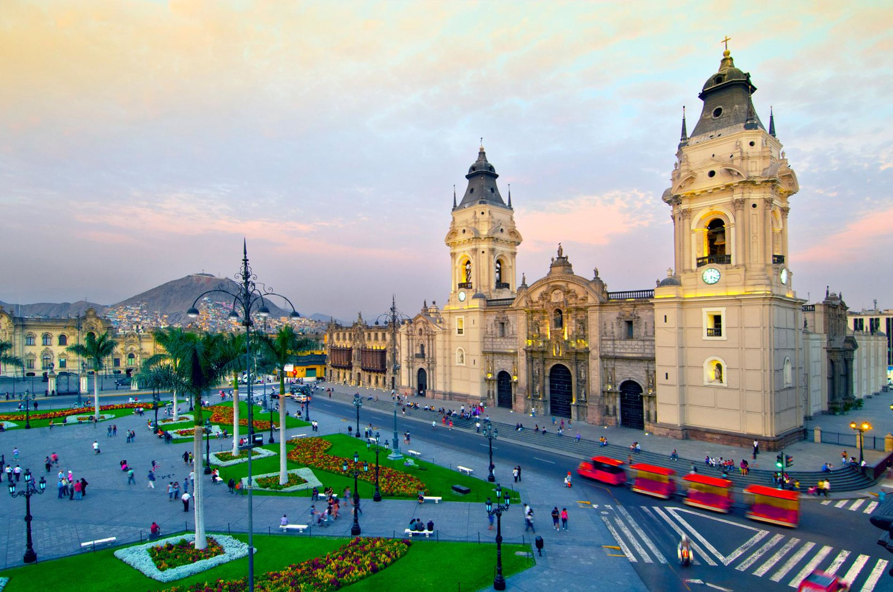

Bienvenido a la Guía de Perú!
Sobre el país
Perú es un país sudamericano que alberga parte de la selva amazónica y la famosa ciudad inca de Machu Picchu, enclavada en la Cordillera de los Andes. La región que rodea Machu Picchu, que incluye el Valle Sagrado de los Incas, el Camino Inca y la ciudad colonial de Cusco, es rica en sitios arqueológicos. En la costa del Pacífico se encuentra Lima, la capital del país, con un centro histórico colonial bien conservado e importantes museos que exhiben arte precolombino.
Historia
Perú fue cuna de grandes civilizaciones antiguas, como Caral, Nazca, Moche y, especialmente, los Incas, quienes crearon un poderoso imperio con capital en Cusco. La independencia fue declarada el 28 de julio de 1821 por San Martín y consolidada por Simón Bolívar en 1824. Además de su rica historia, Perú es mundialmente conocido por su patrimonio indígena, sus sitios arqueológicos y su galardonada gastronomía, llena de diversidad cultural.
Capital
Lima, la capital de Perú, se ubica en la árida costa del Pacífico. A pesar de su preservado centro colonial, la ciudad es una metrópolis vibrante y una de las más grandes de Sudamérica. Alberga la colección de arte precolombino del Museo Larco y el Museo de la Nación, que recorre la historia de las antiguas civilizaciones del Perú. La Plaza de Armas y la catedral del siglo XVI constituyen el corazón del centro histórico de Lima.
Perú está dividido en 24 departamentos y una provincia constitucional, cada uno con sus propias características culturales, geográficas e históricas, que van desde la costa árida hasta las montañas andinas y la selva amazónica. Entre ellos se encuentran Amazonas, Áncash, Apurímac, Arequipa, Ayacucho, Cajamarca, Callao, Cusco, Huancavelica, Huánuco, Ica, Junín, La Libertad, Lambayeque, Lima, Loreto, Madre de Dios, Moquegua, Pasco, Piura, Puno, San Martín, Tacna, Tumbes y Ucayali, formando un país de gran diversidad y riqueza natural y cultural.